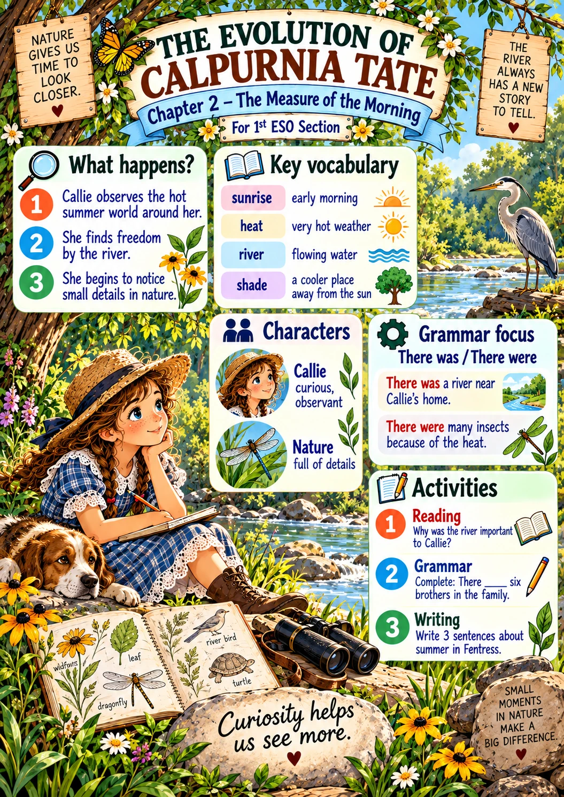
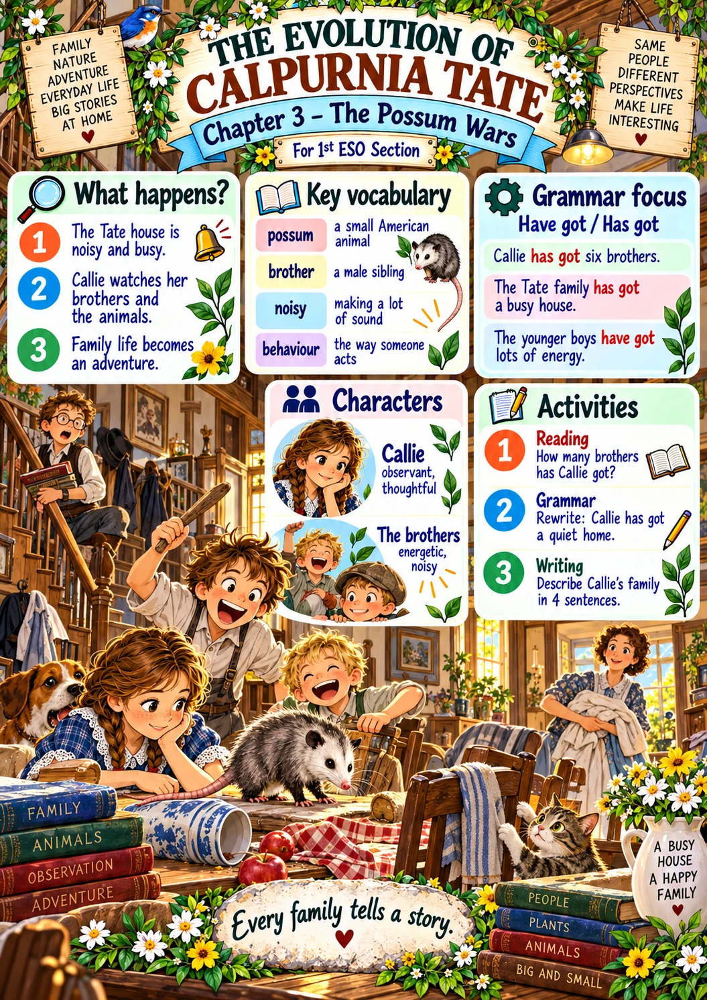
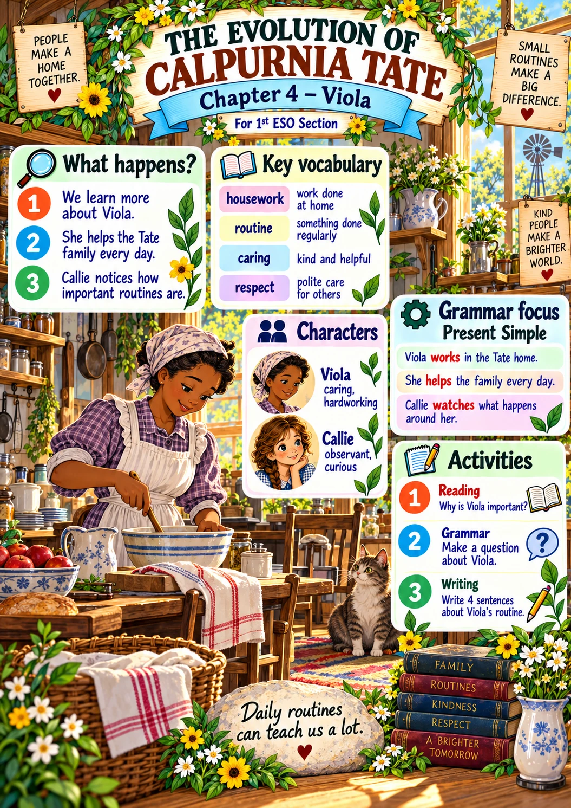
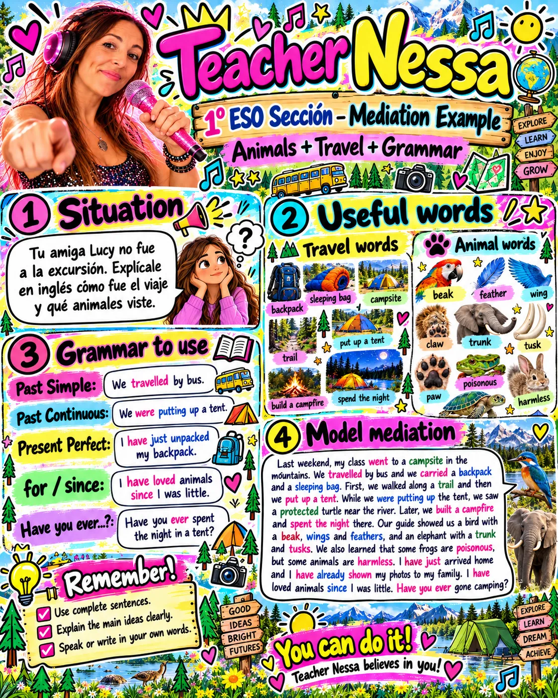
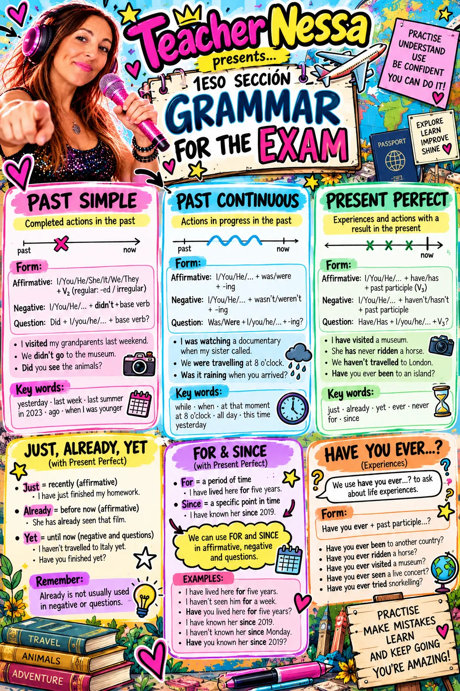
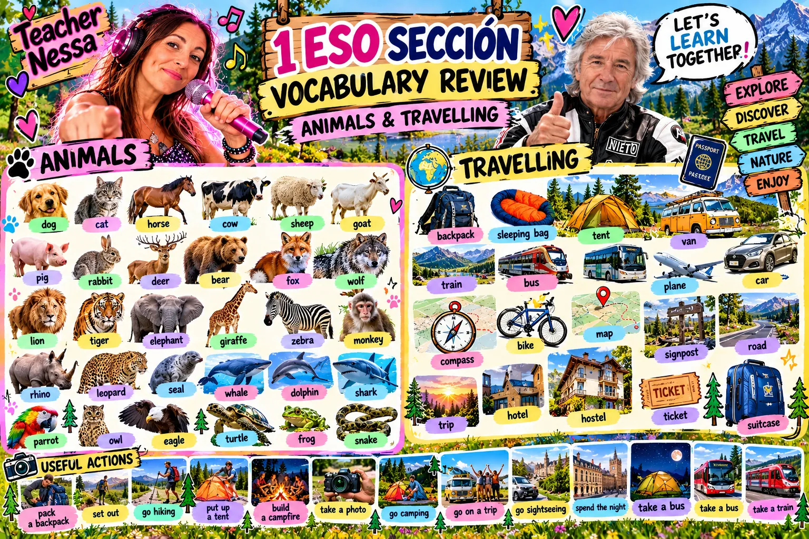
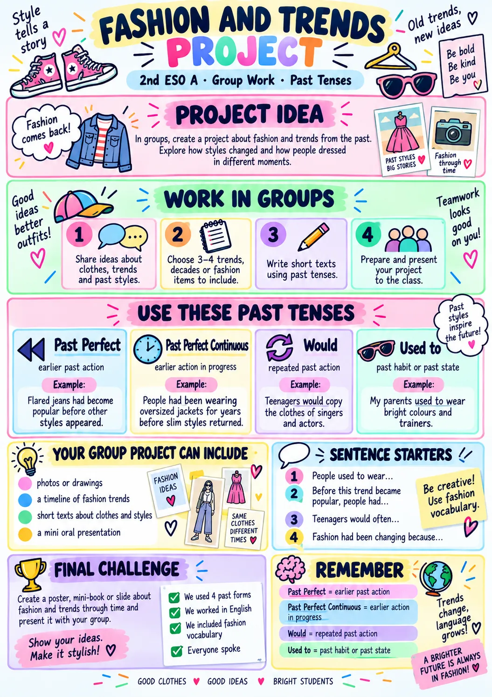
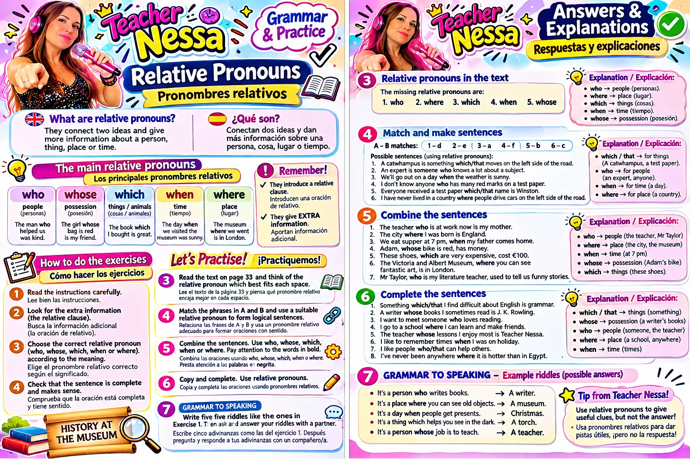

Los pósteres, tal como son.
Aquí se ven los dibujos originales completos, no fichas de catálogo. Pulsa cualquier póster para ampliarlo o abrir su imagen original.
Esta es una prueba con 8 pósteres reales. La biblioteca actual no se ha sustituido.
Pósteres originales · 8







